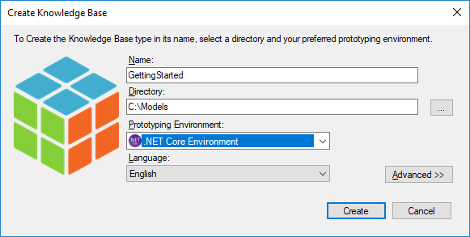

The GeneXus .NET Core generator allows you to generate .NET Core Web applications.

It was released with GeneXus 16 because Microsoft completely rewrote the .NET Core platform as the successor to .NET Framework, after many years of offering its well-known .NET Framework.
Unlike .NET Framework, the .NET Core is an open-source platform for Windows, Linux, and macOS operating systems.
In addition, .NET Core offers a higher performance considering the same code executed in both .NET Framework and .NET Core.
Therefore, GeneXus has followed Microsoft's evolution by incorporating the .NET Core generator.
When GeneXus released the .NET Core generator, the last version of this cross-platform was 2.1, so the GeneXus .NET Core generator started generating for said version. Later on, Microsoft released .NET Core versions 2.3, 3.0, and 3.1, and GeneXus followed the evolution generating the code for those new versions.
The GeneXus .NET Core generator will continue to evolve along with the new versions that Microsoft plans to release for the .NET Core platform.